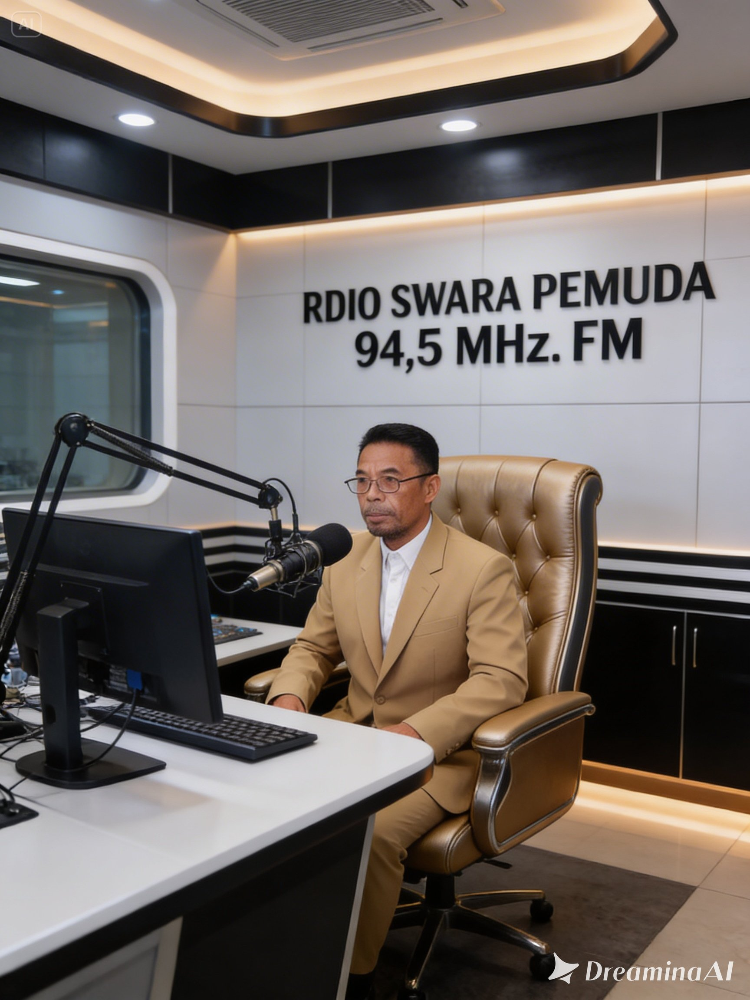

Selamat Datang di Media Berbagi Oleh Epen Supendi, S.Pd. TENDIK MTs Pamuruyan Cibadak-Sukabumi JABAR Selamat Datang di Media Berbagi Oleh Epen Supendi, S.Pd. TENDIK MTs Pamuruyan Cibadak-Sukabumi JABAR

Perangkat Kegiatan Belajar Mengajar
Pusat Unduhan Modul Ajar dan Administrasi Guru Kurikulum Merdeka dan PANCA CINTA (KBC)